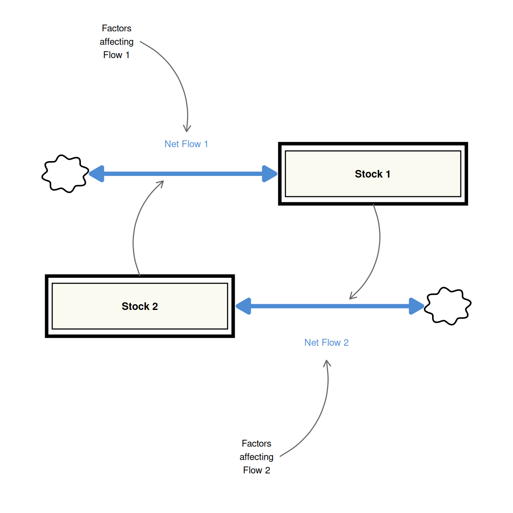
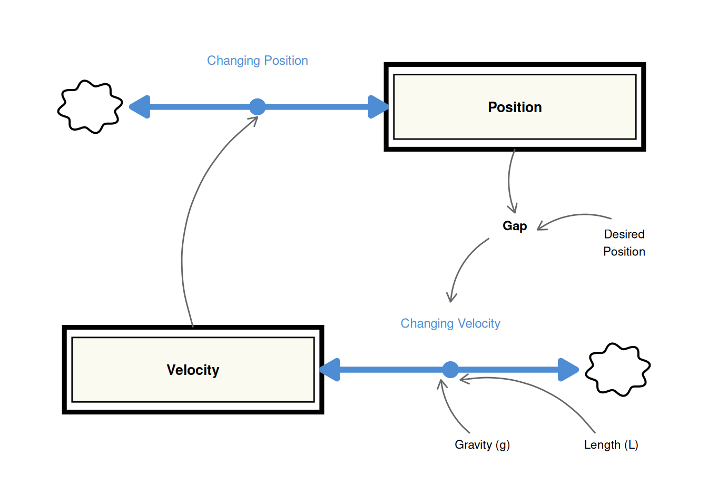
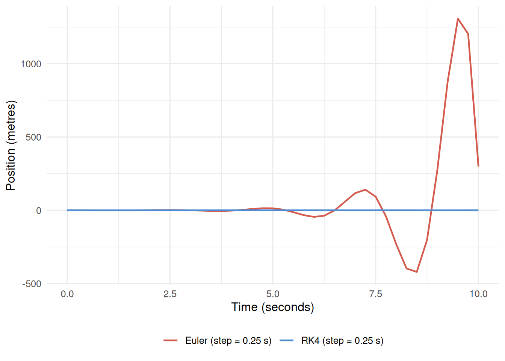
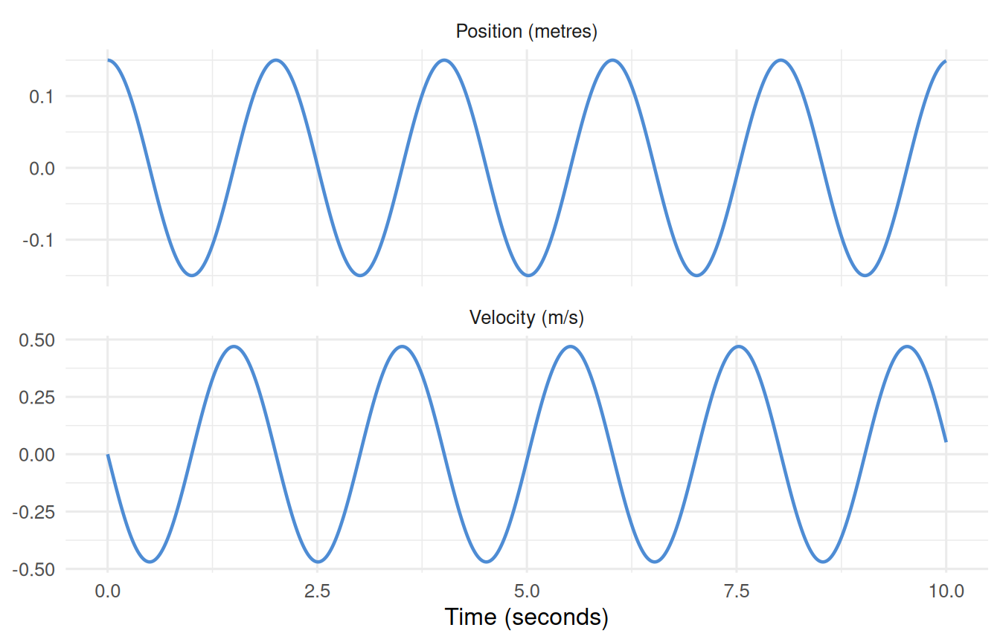
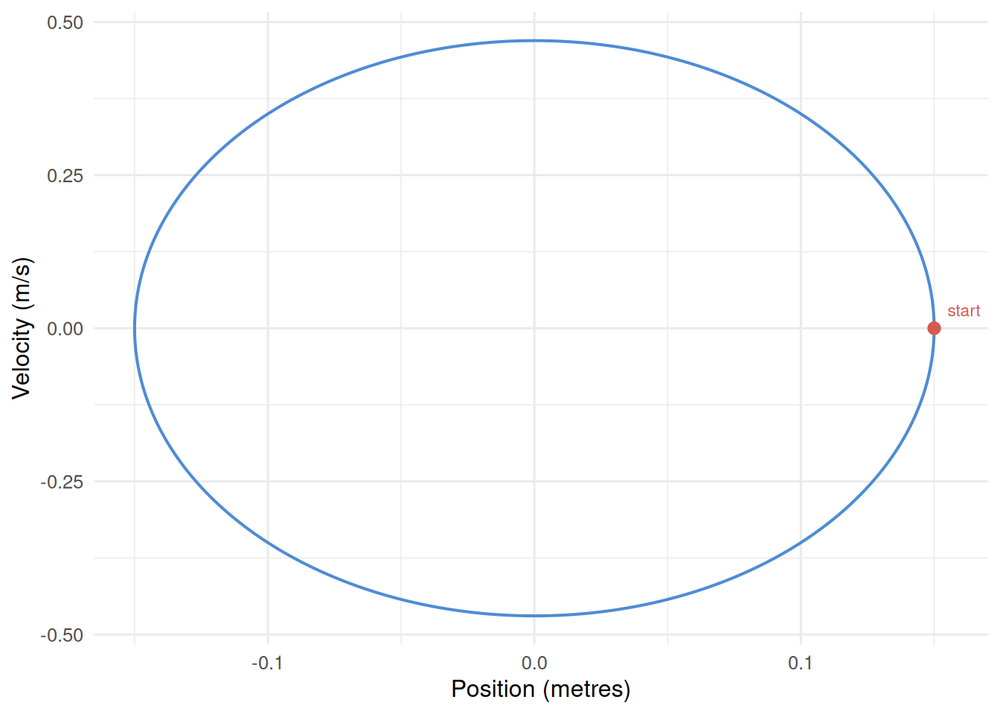

Tutorial 7: Sustained Oscillation — The Pendulum
Two-stock cross-coupled structures and why integration method matters
Introduction: What Is Sustained Oscillation?
Many real systems cycle up and down — a pendulum swings back and forth, employment levels in an industry rise and fall on multi-year cycles, blood sugar oscillates around a set point. This behaviour is called sustained oscillation.
Sustained oscillation is a fundamentally different mode of behaviour from the three we have seen so far:
| Behaviour | Producing structure |
|---|---|
| Exponential growth or decay | One stock, one reinforcing loop |
| Goal-seeking / asymptotic approach | One stock, one balancing loop |
| S-shaped growth | One stock, competing reinforcing and balancing loops |
| Sustained oscillation | Two stocks, cross-coupled flows |
The last row reveals a key result: a single-stock system cannot oscillate sustainably. A single stock always converges to equilibrium or diverges. Two stocks, linked in the right way, can sustain oscillation.
The Generic Structure for Sustained Oscillation
The structural requirement is straightforward: each stock’s rate of change must be driven by the other stock, not by itself. This cross-coupling is what creates oscillation.
Compare this to the single-stock structures from earlier tutorials. There, the information link looped straight back to the same stock’s own flow. Here, each link crosses over to influence the other stock’s flow. This mutual dependency keeps both stocks changing, which keeps both flows active, sustaining the cycle indefinitely.
The Pendulum Model
The pendulum is the simplest physical instantiation of the generic oscillating structure. A bob is displaced from its resting position and released; gravity pulls it back, overshoots, and the cycle continues.
The two stocks are:
| Stock | Description | Unit |
|---|---|---|
| Position | Horizontal displacement from equilibrium | metres |
| Velocity | Rate of change of position | m/s |
The cross-coupling:
- Velocity drives Position change. The position changes at a rate equal to the current velocity — this is just the definition of velocity.
- Position drives Velocity change. How far the pendulum is displaced (the gap from equilibrium) determines the restoring acceleration due to gravity.

Model Equations
The equations are:
\[\frac{d(\text{Position})}{dt} = \text{Velocity}\]
\[\frac{d(\text{Velocity})}{dt} = \frac{g}{L} \times \text{Gap}\]
\[\text{Gap} = \text{Desired Position} - \text{Position}\]
where \(g = 9.8 \text{ m/s}^2\) is gravitational acceleration and \(L\) is the pendulum length in metres. Desired Position is the equilibrium point (zero horizontal displacement).
Note that when Position > 0 (displaced to the right), Gap is negative, so velocity decreases — the restoring force pulls the bob back. This sign reversal is what keeps the system cycling rather than diverging.
R Implementation
Libraries
library(deSolve)
library(tidyverse)Why Integration Method Matters
This model is a critical illustration of why Euler integration fails for oscillating systems. Euler approximates each step using only the derivative at the start of the step. In an oscillating system, the derivative changes rapidly within each step, and Euler systematically overestimates the amplitude — producing oscillations that grow rather than sustain.
RK4 evaluates the derivative at four points within each step, tracking the curvature accurately and maintaining constant amplitude.
model <- function(time, stocks, params) {
with(as.list(c(stocks, params)), {
c_gap <- p_desired_position - s_position
f_changing_position <- s_velocity
f_changing_velocity <- (p_gravity / p_length_of_pendulum) * c_gap
ds_position_dt <- f_changing_position
ds_velocity_dt <- f_changing_velocity
return(list(
c(ds_position_dt, ds_velocity_dt),
gap = c_gap,
acceleration = f_changing_velocity
))
})
}
stocks <- c(s_position = 0.15, s_velocity = 0)
params <- c(p_desired_position = 0, p_gravity = 9.8, p_length_of_pendulum = 1)
comparison_times <- seq(0, 10, 0.25)
sim_euler <- ode(
times = comparison_times, y = stocks, parms = params,
func = model, method = "euler"
) |>
as_tibble() |>
mutate(time = as.numeric(time), s_position = as.numeric(s_position)) |>
select(time, s_position) |>
mutate(method = "Euler (step = 0.25 s)")
sim_rk4 <- ode(
times = comparison_times, y = stocks, parms = params,
func = model, method = "rk4"
) |>
as_tibble() |>
mutate(time = as.numeric(time), s_position = as.numeric(s_position)) |>
select(time, s_position) |>
mutate(method = "RK4 (step = 0.25 s)")
bind_rows(sim_euler, sim_rk4) |>
ggplot(aes(x = time, y = s_position, colour = method)) +
geom_line(linewidth = 0.8) +
scale_colour_manual(
values = c("Euler (step = 0.25 s)" = "#d45b4e",
"RK4 (step = 0.25 s)" = "#4e8cd4")
) +
labs(x = "Time (seconds)", y = "Position (metres)", colour = NULL) +
theme_minimal(base_size = 12) +
theme(legend.position = "bottom")
All further runs use method = "rk4".
Model Function
The model follows the standard deSolve function signature. Variable names use the project’s prefix convention (s_ stocks, p_ parameters, c_ converters, f_ flows).
model <- function(time, stocks, params) {
with(as.list(c(stocks, params)), {
c_gap <- p_desired_position - s_position
f_changing_position <- s_velocity
f_changing_velocity <- (p_gravity / p_length_of_pendulum) * c_gap
ds_position_dt <- f_changing_position
ds_velocity_dt <- f_changing_velocity
return(list(
c(ds_position_dt, ds_velocity_dt),
gap = c_gap,
acceleration = f_changing_velocity
))
})
}
stocks <- c(s_position = 0.15, s_velocity = 0)
params <- c(p_desired_position = 0, p_gravity = 9.8, p_length_of_pendulum = 1)The pendulum is released from a displacement of 0.15 metres with zero initial velocity. Desired Position is zero (the equilibrium resting point). Pendulum length is 1 metre.
Solving and Visualising
sim_time <- seq(0, 10, 0.01)
sim_data <- ode(
times = sim_time,
y = stocks,
parms = params,
func = model,
method = "rk4"
) |>
as_tibble() |>
mutate(across(everything(), as.numeric))sim_data |>
select(time, s_position, s_velocity) |>
pivot_longer(-time, names_to = "variable", values_to = "value") |>
mutate(
variable = recode(variable,
"s_position" = "Position (metres)",
"s_velocity" = "Velocity (m/s)")
) |>
ggplot(aes(x = time, y = value)) +
geom_line(colour = "#4e8cd4", linewidth = 0.8) +
facet_wrap(~variable, ncol = 1, scales = "free_y") +
labs(x = "Time (seconds)", y = NULL) +
theme_minimal(base_size = 12)
The 90-degree phase offset between position and velocity is a signature of sustained oscillation and is visible in the phase portrait — a plot of velocity against position.
sim_data |>
ggplot(aes(x = s_position, y = s_velocity)) +
geom_path(colour = "#4e8cd4", linewidth = 0.7) +
geom_point(data = sim_data[1, ], aes(x = s_position, y = s_velocity),
colour = "#d45b4e", size = 2.5) +
annotate("text", x = 0.155, y = 0.03, label = "start",
size = 3, colour = "#d45b4e", hjust = 0) +
labs(x = "Position (metres)", y = "Velocity (m/s)") +
theme_minimal(base_size = 12)
Summary
- Sustained oscillation requires two stocks with cross-coupled flows — each flow driven by the opposite stock.
- This is the generic structure (Figure #6, D-4426-3). The pendulum is one physical instance of it; employment-inventory cycles are another.
- Euler integration fails for oscillating systems: it produces artificial amplitude growth at any step size. RK4 is required.
- The pendulum equations are:
- \(d(\text{Position})/dt = \text{Velocity}\)
- \(d(\text{Velocity})/dt = (g/L) \times \text{Gap}\)